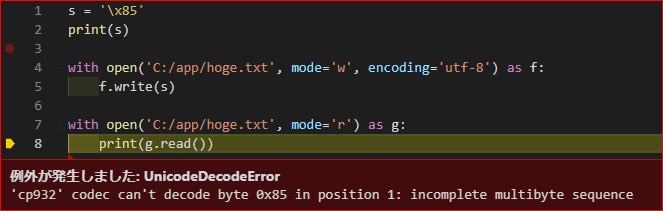
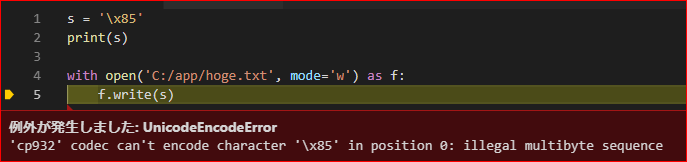

Pythonのopen関数はencoding引数を指定しよう
結論
WindowsでPythonのopen関数を使うなら、encoding引数を指定しよう（血涙
何があったのさ
WindowsにてPythonを用いて、テキストファイルの書き出しと読み込みをしようとしたんです。
そうしたら憎きアイツが出てきたわけです。

出たよ、UnicodeDecodeError・・・。
環境
- Windows 10
- Python 3.6
- Visual Studio Code
コード
s = '\x85'
print(s)
with open('C:/app/hoge.txt', mode='w', encoding='utf-8') as f:
f.write(s)
with open('C:/app/hoge.txt', mode='r') as g:
print(g.read()) # UnicodeDecodeError`でエラー
※問題の部分だけ抜粋しています。本来のソースは入力の文字列がもっとごちゃごちゃしてました。
原因
つまるところ、読み込み時のopenで引数のencodingを指定していなかったからでした_:(´ཀ`」∠):_
書き出しの際には下記のようにencodingを指定していました。
with open('C:/app/hoge.json', mode='w', encoding='utf-8') as f:
ただ、書き出したファイルを読み込む際に、encodingの指定を失念していました。
with open('C:/app/hoge.json', mode='r') as g:
encodingの指定がない場合については、オフィシャルだと下記のように説明されています。
encoding が指定されていない場合に使われるエンコーディングはプラットフォームに依存します
Windowsだと利用されるエンコーディングはCP932です。Pythonから入出力する際、CP932に変換できない文字が存在したため、「変換できないよ！」とエラーになったわけです。
ちなみに
Python内部では文字列型はUnicodeで保持されています。そして、入出力の際はPythonがシステムのエンコーディングに自動で変換してくれます。この場合、もともとUTF-8で保持されていたものをCP932に変換します。
この変換をユーザーが意識する必要はありません。逆に言えば、知らない間に勝手に変換されます。そして、この自動変換の際に何かしらの「変換できない文字」があるとエラーになる、というわけです。
解消方法
エラーを解消するには、書き出し時と同様に読み込み時にもencodingを指定する必要があります。
with open('C:/app/hoge.json', mode='r', encoding="utf-8) as f:
j = json.load(g)
ちなみに、書き出しの際にencodingを指定しなかった場合も、読み込みと同様にエラーになります。当然っちゃ当然ですね。

とりあえず今回は、両方にencodingを指定する方法を取りました。
おわりに
encodingを指定のは、手癖にしておくべきだと思いました（小並感